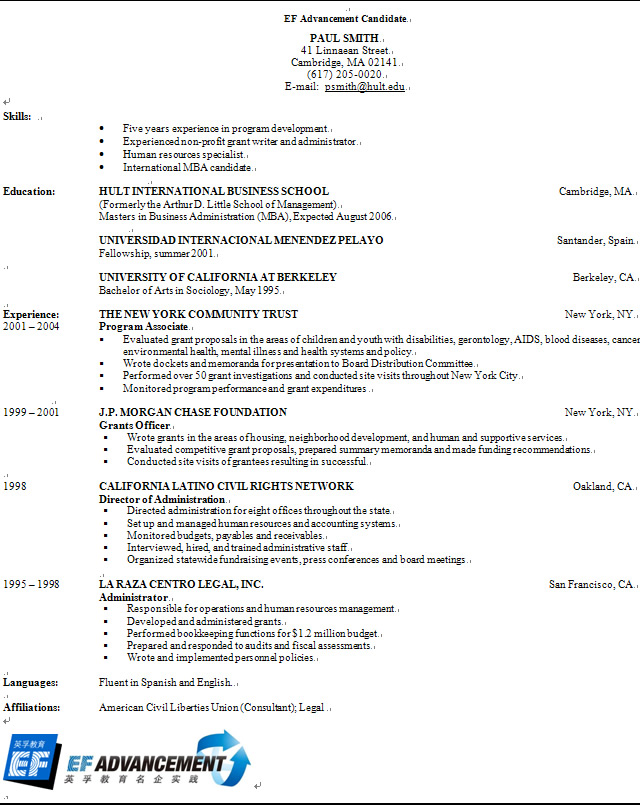

Hot positions
- iPhone Developer
- Senior .Net Developer
- Manager of Volunteer Services
- Senior SAP Manager
- Multimedia System Developer


Skill Builders - How to write your KILLER resume
Your Personal EF Advancement Resume Kit
Dear DON,
Welcome to EF Advancement! The first step in finding a great career or internship opportunity is preparing your resume. The following is your own Killer Resume Kit. This guide is designed to help you get started in the process of creating a western-style English resume.
Please keep in mind that your Chinese resume is equally, if not more, important as most HR Managers will read the Chinese version. If you would like to learn more about resume writing and interviewing, please attend one of our many workshops on this topic. You can book available EF Advancement-related Career Services workshops, such as Resume Writing, Elevator Pitch, and Networking, on OBOE.
Your Killer Resume Kit includes:
- A link to a video about resume writing
- Some basic resume writing “do’s” and “don’ts”
- A sample resume by Hult Business School
- Your resume template, which you can use to start writing your resume
Step 1: Watch and Learn!
Step 2: Review the Basics!
Before you get started:
- Know yourself.
- Understand requirements of position you apply for.
- Position yourself: highlight relevant skills and achievements.
- Keep in mind: during an interview you need to be able to discuss all aspects of your resume.
Do’s:
Understand the purpose of a resume: to make you stand out.– Content: customize your resume for the position you’re applying for.
– Format: make it visually appealing and easy to read.
- KISS: Keep It Short and Simple!
– But DO highlight your skills with examples, using action words - Have concise but to-the-point cover letter.
– The cover letter is your opportunity to describe in detail why you are the best candidate. - Always have it proof-read by someone else.
– Is the resume content clear?
– Are there spelling mistakes?
Use Action Verbs:
- How does this sound?
I am good manager and sales person.
Better:increased annual sales 20% by successfully managing team of 5 part-time clerks. - What about this one?
Helped to do produce design templates.
Better: Improved turn-around time of design template production from 5 to 3 days./li> - And this?
I am a popular manager, well liked by staff.
Better: I am a popular manager, well liked by staff.
Or:Increased employee retention from below industry average to industry-leading level.
Don’ts:
The 3 most common mistakes:
- Not focused on skills or achievements.
Don’t write a JD, nor describe your skills – show them with numbers! - Too long!
Be brief – one page is enough in most cases. - Not correctly formatted and has spelling mistakes.
Prove you pay attention to detail.
For more information about resume preparation and interviewing skills, watch the Member Life Calendar for great Career Services Workshops!
Step 3: Use this as an example of a great resume!
The following is an example of a well written resume, prepared by Hult Business School. After you completely fill in your resume template, it will look like this one.

Step 4: Start Your Resume!
DON, you are now ready to begin building your western-style English resume! To use this template, simply click on the desired field and start typing. The template will automatically format your resume to match the sample.
Two quick things to do when you finish:
- Delete the above guide to save only your resume.
- When you are finished, please save the resume with your name and Elite code number in the file name.
For example, “Johnnie Example GZ7733377.doc” and email it to your EF Advancement Case Manager.